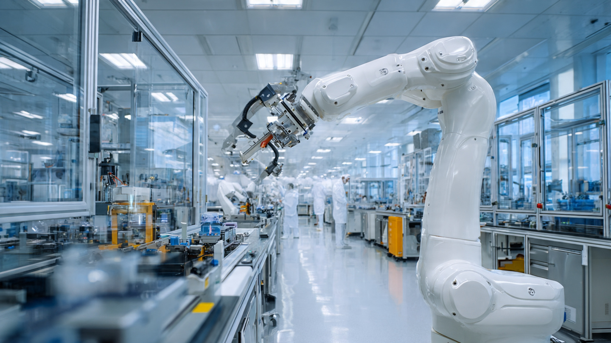

Car Factories Built the Robot Industry. Last Quarter, Pharma Labs and Chip Fabs Took Over.
North American robot orders held flat at 9,055 units in Q1 2026 while automotive OEM orders collapsed 35.1% in units and 48.2% in revenue. Non-automotive industries grew 24.5%. Nobody has calculated what happened to the price per robot.

Nine thousand and fifty-five industrial robots were ordered across North America in the first quarter of 2026, according to the Association for Advancing Automation's quarterly report released May 12, representing a 0.1% decline from Q1 2025 at a total value of $543 million, down 6.4% year over year. If you stopped reading there, you would conclude the North American robotics market had a sleepy quarter, a rounding-error dip barely worth mentioning in a $2.25 billion annual market.
You would be wrong.
Underneath those flat topline numbers, the customer base for industrial robots underwent its most violent restructuring in at least a decade, with automotive OEMs cutting orders by 35.1% in units and 48.2% in revenue while life sciences surged 54.1%, electronics and semiconductors climbed 31.7%, and food and consumer goods gained 16.0%. When you aggregate every non-automotive industry together, the combined growth rate was 24.5% in units, more than compensating for the automotive crater and holding the overall market roughly level. A3 CEO Jeff Burnstein framed the quarter as evidence of a "broadening demand base," but broadening implies expansion into new territory while holding existing ground, and the automotive data shows something closer to abandonment.
The Revenue-Per-Robot Calculation Nobody Published
Every press release covering the A3 data reported the same headline figures: units flat, revenue down 6.4%, cobots up. None of them divided $543 million in total Q1 2026 revenue by 9,055 units ordered to get the average price per robot, which is where the structural story lives. It comes to approximately $59,945. Working backward from the year-over-year percentages, Q1 2025 had roughly 9,064 units at approximately $580 million in revenue, yielding an average of $63,994 per robot, which means the average price per industrial robot in North America dropped roughly $4,049 in one year, a 6.3% decline that no coverage of the A3 report mentioned.
Now run the same calculation for collaborative robots alone. Cobots grew 55.6% in units and 78.2% in revenue, and when revenue grows faster than units, the average price per unit is rising, in this case by approximately 14.5% year over year. These two numbers moving in opposite directions reveal a market that is bifurcating: traditional industrial robots are becoming cheaper commodity equipment while cobots command rising premiums from customers who value human-robot collaboration over raw throughput, customers concentrated in pharmaceutical labs, chip fabrication facilities, and food processing plants where cobots represented 60.7% of life sciences orders and 45.9% of electronics orders in Q1 2026.
| Segment | Unit Change (YoY) | Revenue Change (YoY) | Price Trend |
|---|---|---|---|
| Total market | -0.1% | -6.4% | Falling (~6.3%) |
| Automotive OEMs | -35.1% | -48.2% | Falling sharply |
| Cobots (all industries) | +55.6% | +78.2% | Rising (~14.5%) |
| Life sciences | +54.1% | N/A | 60.7% are cobots |
| Electronics/semicon | +31.7% | N/A | 45.9% are cobots |
| Food/consumer goods | +16.0% | N/A | Growing |
| All non-auto | +24.5% | N/A | Expanding |
Why Auto Collapsed
The automotive sector's 35.1% decline did not happen in isolation, and it did not come without warning. In H1 2025, auto OEM robot orders had rebounded 34% year over year, suggesting a recovery from the 2023 slump, but that recovery evaporated in a single quarter as three forces converged simultaneously.
First, tariffs. Under a US tariff regime imposing 110% duties on Chinese EVs, 85% on semiconductors, and 35% on consumer electronics as of early 2026, automakers relying on Chinese-manufactured components in their EV supply chains, the economics of new production line investments became unstable overnight. Why commit to a $50 million robot installation for an EV assembly line when the battery packs and power electronics feeding that line face tariff uncertainty that could reshape your bill of materials within months?
Second, the EV transition slowdown. Ford, GM, and Stellantis all scaled back electrification timelines in late 2025 and early 2026, and each delayed EV platform means a delayed factory retooling, which is precisely when automakers place their largest robot orders. Part of that 35.1% drop is a timing effect: orders were deferred, not permanently canceled, but deferred orders still register as a 35.1% crater in the quarter they were supposed to land.
Third, overcapacity. Global automakers installed record numbers of robots during the 2021-2022 boom, and those robots have 10-to-15-year service lives, which means that when production volumes stall, existing robot capacity goes underutilized long before new orders need to be placed. BMW's Spartanburg plant operates roughly 2,000 traditional industrial robots alongside its two experimental humanoid units, and that installed base has years of productive life remaining before anyone in Munich signs a purchase order for replacements.
Where the Robots Went Instead
The 24.5% growth in non-automotive industries was not evenly distributed, and the composition of those orders tells a story about what kind of automation these buyers actually want. Life sciences led at 54.1%, with nearly 61% of those orders consisting of cobots, collaborative robots designed to work alongside human operators without safety cages, in contrast to the traditional six-axis industrial arms that dominate automotive welding and painting lines. In electronics and semiconductors, cobots represented 45.9% of orders, a share that would have been unthinkable five years ago when cobots were considered a niche product for small manufacturers who could not afford proper safety infrastructure.
Overall cobot share hit 18.1% of total North American robot orders by units in Q1 2026. In H1 2025, cobots were 23.7% of Q2 orders, a number that seemed anomalous at the time, but the Q1 2026 figure covering a full quarter with larger sample size confirms the trajectory is structural rather than statistical noise. Separately, the International Federation of Robotics reported 542,076 industrial robot installations globally in 2024, double the pace from a decade earlier, with Asia accounting for 74% of deployments and China alone representing 54%, but the IFR data does not break out cobots from traditional industrials at the same granularity as A3's North American figures, which makes the A3 cobot data uniquely valuable for understanding the market's structural evolution.
Automotive's Declining Share: The Trajectory Math
In 2022, North American robot orders hit a record $2.38 billion across 44,196 units, with automotive representing roughly half of all orders. By 2023, the entire market had declined 30%, followed by a partial recovery in 2024 and 2025 driven increasingly by non-automotive industries: Q3 2025 showed 11.6% growth with non-auto leading and auto declining, and full-year 2025 finished at $2.25 billion, up 6.6%, with general industries outpacing automotive for the first time on a full-year basis.
Q1 2026 marks an inflection. If automotive OEM orders continue declining at anywhere near 35.1% per year and non-auto maintains 24.5% growth, automotive's share of the North American robot market drops below 15% within two years. For an industry that literally invented the use case for industrial robots when General Motors installed the first Unimate at its Trenton, New Jersey die-casting plant in 1961, that trajectory represents a generational realignment, the industrial equivalent of discovering that the railroad industry no longer buys most of the steel.
The China Factor
This restructuring is playing out against a geopolitical backdrop that compounds the uncertainty. China's robotics exports surged to ¥11.32 billion in the first week of May 2026 alone, according to weekly trade data, and a US Congressional bill introduced in May 2026 would ban Chinese-manufactured robotics from American critical infrastructure at the same time that Morgan Stanley projects China will hold 16.5% of the global humanoid robot market by 2030, building on its current 54% share of new industrial installations worldwide.
For North American robot buyers, this geopolitical tension creates a pricing paradox that has no clean resolution. Chinese-adjacent manufacturers offer lower-cost units, but US tariffs make those units more expensive for American buyers, while the demand growth in life sciences, semiconductors, and food processing is itself driven by domestic reshoring priorities triggered by supply chain concerns about China. Customers fleeing Chinese supply chain risk are ordering robots whose components may eventually face the same tariffs they were trying to escape.
Limitations
The revenue-per-robot calculation uses aggregate A3 data, and individual robot categories like welding, material handling, and inspection carry different price points, so the mix shift between categories could account for some of the average price decline independent of actual per-unit pricing changes. A3 does not publish revenue breakdowns for cobots separately from traditional industrials at the quarterly level, which means the cobot price trend is inferred from the ratio of revenue growth to unit growth rather than directly observed. Automotive's 48.2% revenue decline is steeper than its 35.1% unit decline, suggesting auto buyers were canceling higher-value orders for large welding and painting systems rather than low-cost pick-and-place units, which would exaggerate the "traditional robots getting cheaper" narrative at the aggregate level. Note that the tariff connection to auto order declines is correlational, not causal: auto OEMs do not publicly attribute robot order cancellations to tariff policy in their quarterly filings or investor calls.
The Strongest Case Against This Being Structural
Automotive robot orders are cyclical, not secular, and the industry has experienced comparable drops before: the 2009 financial crisis cratered orders by more than 50%, followed by a recovery that restored automotive's market share within three years, and the 2020 pandemic-induced shutdown was followed by record-breaking 2021-2022 orders. Meanwhile, the 2023 decline of 30% across the entire market was itself followed by a 34% auto OEM rebound in H1 2025. Alternatively, the Q1 2026 collapse could be another trough in a cyclical pattern driven by EV transition timing and tariff uncertainty rather than a permanent customer shift, and if tariffs are renegotiated and EV platform launches proceed in 2027-2028, automakers could place a surge of robot orders that returns their market share to historical norms within two to three years. And the broadening of demand into pharma and semiconductors is real, but it may represent a high-water mark driven by COVID-era lab automation investment and CHIPS Act semiconductor buildouts, both of which have finite funding horizons.
The Bottom Line
North America's robot market did not shrink in Q1 2026. It reorganized. Automotive OEMs, the founding customer of the industrial robotics industry, cut orders by more than a third, and pharma labs, chip fabs, and food processors collectively grew fast enough to keep total volumes flat. Cobots now represent nearly one in five robots ordered in North America, and they are the only segment where prices are rising. If you work in automotive manufacturing, this looks like a cyclical dip until proven otherwise, but the burden of proof just shifted because the customers replacing your orders are buying different robots for different reasons at different price points in different facilities, and they are not waiting for Detroit to come back. If you work in pharma, semiconductor fabrication, or food production, the question is no longer whether to automate with cobots but how fast your competitors already have. If you manage a robotics portfolio or supply chain, stop treating automotive as the bellwether for the industry. Follow the cobot premium.
Sources
- A3 Q1 2026 North American Robot Orders Report. businesswire.com (May 12, 2026)
- A3 Historical Quarterly Reports (2022-2025). automate.org
- IFR World Robotics 2025 Report. ifr.org
- Morgan Stanley humanoid robot market projections. morganstanley.com